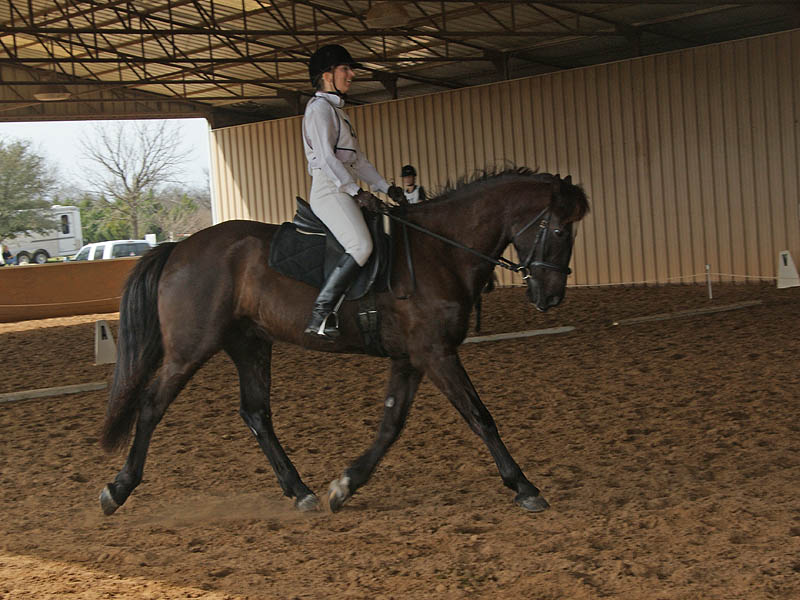
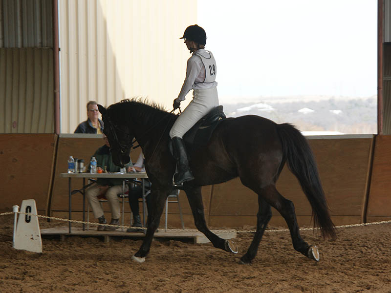
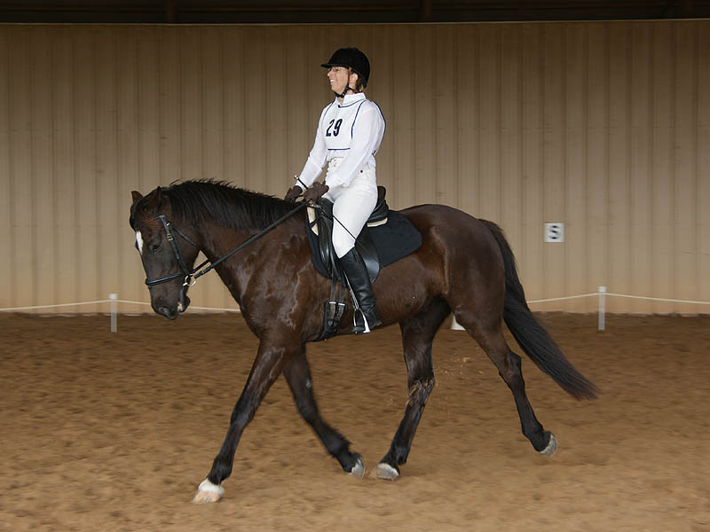
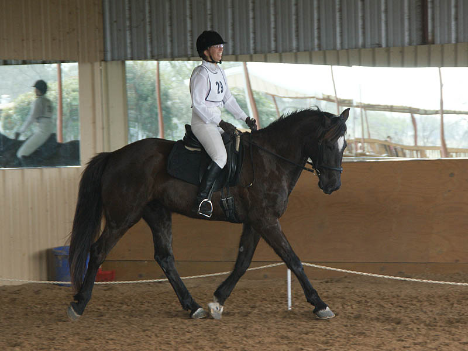

Horse Trial at Curragh
We had a great dressage warm up and were in sync for the test.
The stadium warm up was a bit stressful, but the stadium round was a lot of fun.
Cross country would have gone better if I'd have let him go,
but we made it around close to time and no refusals or run outs.
Our final score was 37.4 (33 for dressage and 4.4 sec over time).
We stayed in 2nd place after each phase.
I thought he'd not want to go out on cross country after doing the two other parts,
but not to worry. He went.
I switched to a loose ring from
a full cheek this week and he's taken to it nicely.
Less warm up than usual, but he was off his forehand from the start and not rushy,
just swingy and forward. We'd schooled the cross country course the day before, so
that might have been in his mind.
I had the trot underneath me that is easy to ride. Bouncy and forward is how I think
of it.
I like what his inside hind is doing in the turn, but not what my inside leg is
doing. I should be dropping in the heel and making that leg longer. Not sure what
I was thinking.

Most of our trot work got 7s today.

We got two 8s on our trot work. Almost an 8 on gaits, but they changed it to a 7.
I don't know that we'll ever get 8s on our walk work.
They always want more forward or energy. He was as forward as I've felt him in a
test. Forward without jigging is difficult for me.

Looking at these, he could have had an inch or so more rein. I wish my rein stops were
just where I needed them.

When we picked
up our trot to come in the ring his hind feet started stepping up
high towards his belly. I think he was feeling the dirt hit his belly and was
a bit irritated.
We were dinged on our canter transitions. The judge said I was shortening him at
the trot so he didn't have the impulsion he needed and he had to jump into it.
That transition is still something I'm worried won't happen. We'll figure it out.
We've had the canter I want once at home now, so I know it's in there.

Just happy to have kept the canter after the leap.
He's giving to the bit at the canter more frequently. I think that means we'll be
able to start working on the quality and balance. It shows that I don't think during
a test, seeing that I go from this posture to the next picture only after the canter
circle.
If I lift my shoulders and open my chest we can look pretty nice. I only thought
about it as we were coming to the downward transition, because I've learned that
it helps.

I was so happy with our ride. It wasn't a lot of work for me and he was trying so
hard to do what he thought I wanted in the ring.
I really liked our halt, but the judge thought we weren't straight. I think our
success in dressage is partly due to the jumping and him learning forward while
having more fun.
I have to trust him more. The entire jumping day was spent with me not
giving him his head over the jumps. I still can't make myself believe that if I
give him his head he won't take off (when it seems very likely that my not giving
him his head causes him to try and take off).
Our last time riding an outside course we were eliminated because of stops at a fence.
I had a plan to ride more aggressively to the questionable fences here.
We started from a trot and he was a little surprised when we got to the first fence.
He cantered the second one, but still not in the groove.
I let him take a long spot to the third one, and he was in his jumping mode.
The jumps didn't seem that small when we were doing the course. We had fun with
it.
I'm not one to count strides. I did walk the course before we rode, but the only
things I focused on were my approach to one and the skinny at the end.
Cantering around to the next jump.
I wondered if he'd look at this one. He didn't.
I wasn't thinking about my position at all. I was thinking that if I looked toward
the next fence he'd get the correct lead. It worked, but a longer release would
have been nicer for him.
Again, handsy, trying to get him to balance before the next fence.
Unfortunately I think he felt he needed to take a flyer because of my 'balancing',
which meant I got left behind. Luckily he didn't hold it against me and I slipped
enough rein to keep him going to the next jump in the combination.
And a nice turn to the last fence.
We wobbled toward the skinny, but he straightened out and took it nicely.
Waiting to go cross country.
Trotting from the start box.
Him asking to canter and me using too much force to say no.
Miaren giving his opinion of my use of too much hand.
Head back up and him getting a few canter strides in before I brought him back to
a trot for the first fence.
Not holding my riding against me and taking the first fence nicely.
I was distracted by the rider coming in crossing our path. Miaren was just trying
to figure out what we were doing.
A stride or so before the second fence he figure it out. The we got to discuss how
fast I wanted to get to the next fence compared to how fast he wanted to get there.
After the bank I wanted to trot down the slope. He said fine, but it was going to
be his flying trot. Unfortunately I haven't figured out how to do a canter transition
from a lengthen, so we did the long stretch to the next jump in a lengthen.
His opinion on my choice of rein length. After this we agreed I give him his head
for the landing, but we'd be discussing speed once all four feet were on the ground.
More trotting when we encountered another rider. I could just see him dropping a
shoulder and following that horse instead of finishing our course (I don't think
the thought ever entered his mind).
We did finally canter between fences.
Do you think there's some Cob in that canter?
I think it was a gallop. Well, maybe a hand gallop. All four feet were off the ground
at one time. I've never let him out and during a show didn't seem to be the time
to see what would happen.
We canter stadium fences, but we haven't worked out how it should feel to jump cross
country jumps from a forward canter. He saw no reason to slow up, and I didn't want
to mess with him too much before the jump. There was some compromise.
But, I let him pick his spot (very long) because going that speed, chipping in wouldn't
have felt all that good. I did slip the reins and made sure not to pull on landing.
No head tossing and we cantered on to find the finish flags.
Always go through the finish flags.
He was ready to go around again.